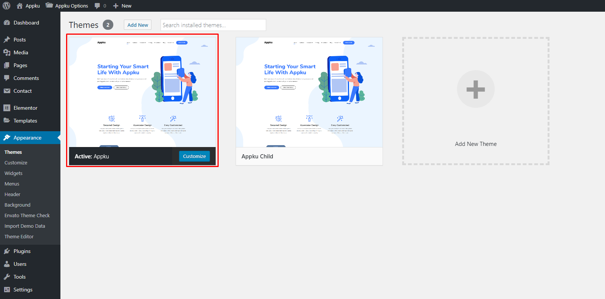
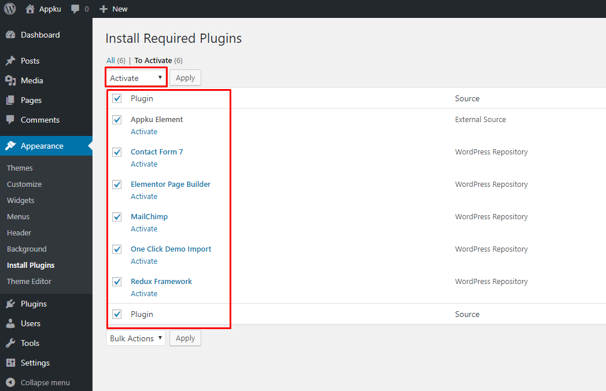
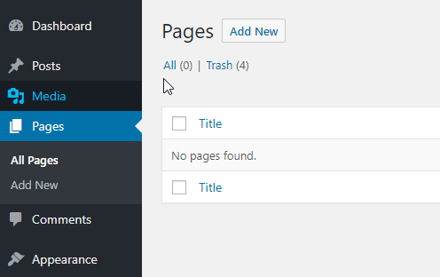
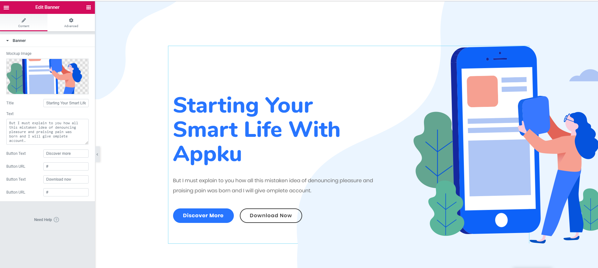
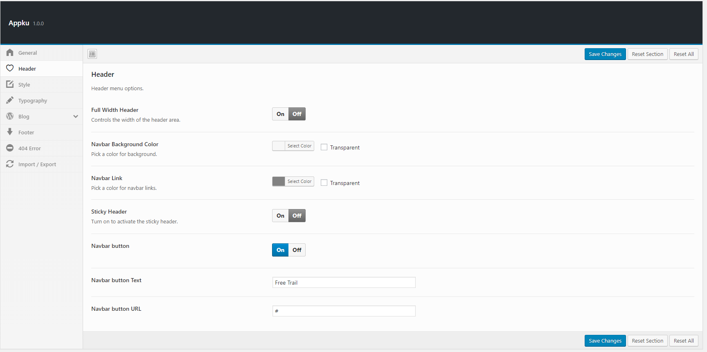

Created: 20/08/2019
By: ThemeBing
Email: farhan01617@gmail.com
Thank you for purchasing my theme. If you have any questions that are beyond the scope of this help file, please feel free to email via my user page contact form here. Thanks so much!
Extract the zipped package downloaded from ThemeForest to your desktop, in the extracted package you will find the Appku.zip file which is the WordPress theme. You can install the theme in two ways:
FTP: Extract Appku.zip file and upload the extracted folder to /wp-content/themes/ folder on your server.
WordPress: Navigate to Appearance -> Add New Themes -> Upload page. Select Appku.zip file. Press the Install Now button to upload and install the theme.
After uploading the theme, you have to activate it. Navigate to Appearance -> Themes page to activate the theme.
After installing the theme you must have to install the ‘Redux’ , ‘Elementor’ , ‘Appku Element’ , ‘MailChimp’, ‘Contact Form 7’ and ‘One Click Demo Import’ plugins to import the demo content as well and work the theme correctly.
If you want your site to look like exactly the ‘NewsPotrika’ demo then you have to import the demo content successfully. You can import the demo content easily from the dashboard. Follow the following steps to import the demo content easily.
Step 1 — Navigate to your website’s WordPress Dashboard > Elementor > Settings
Step 2 — Tick the post you want to edit with Elementor in the Post Types section and click the Save Changes button.
On the top left side of the WordPress dashboard, click Pages > Add New Click Edit with Elementor to enter Elementor Page Builder.
We uses elementor page builder to create page . to customize your website just drag and drop no coding knowledge required
This section will provide you an in-depth guide on how to use the Theme settings. To access the Theme Settings page, go to Dashboard > Appku Options .
You can change the website logos and set a header layout for your website. Also, you can specify some options that relevant to the header layout. There are available several header variations and header configuration settings.
You can able to change the blog layout , excerpt text length , social share button enable/disable , related post control etc . now all the controls are in your hand .
You can configure out the website footer from the Footer Settings tab. Such as you can set footer layout, background color, change the copyright text, hide or show social icon etc
Below code should be place in "contact form 7" for generating shortcode and then use it anywhere in the page-builder you want to display
Conatct Form code for "Contact form 7"
<div class="row contact-form">
<div class="col-lg-6 col-md-6">
[text* name placeholder "Name :"]
[text* email placeholder "Email :"]
[text website placeholder "Website :"]
</div>
<div class="col-lg-6 col-md-6">
[textarea* message placeholder "Message :"]
</div>
</div>
<div class="contact-btn text-center mt-10">
<button type="submit" class="btn">Send message</button>
</div>
I've used the following images, icons or other files as listed.
Once again, thank you so much for purchasing this theme. As I said at the beginning, I'd be glad to help you if you have any questions relating to this theme. No guarantees, but I'll do my best to assist. If you have a more general question relating to the themes on ThemeForest, you might consider visiting the forums and asking your question in the "Item Discussion" section.
ThemeBing